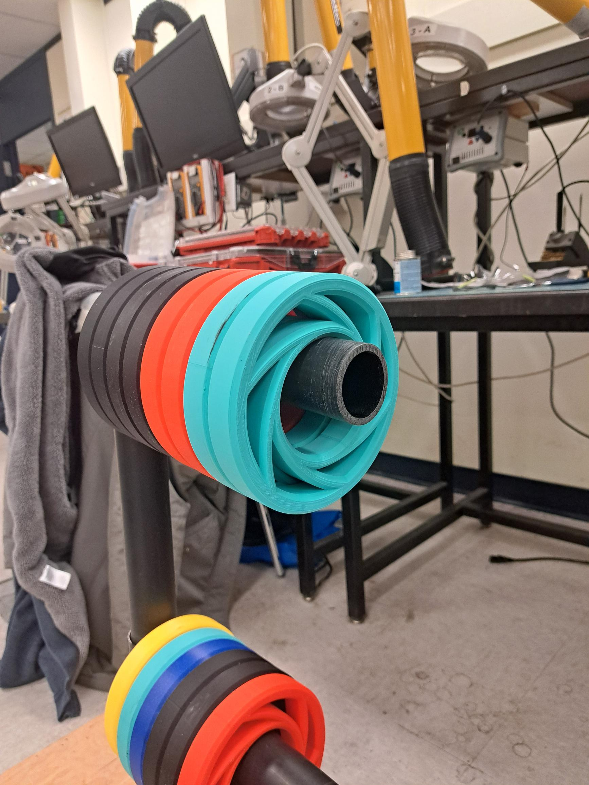

la
compétition
de robotique crc
Un événement de robotique par équipe où les robots visent à marquer le plus grand nombre de points tout en
participant à une série de manches. La compétition met
au défi chaque équipe de démontrer sa capacité à concevoir, construire et utiliser son robot, ainsi qu’à
collaborer efficacement avec un robot partenaire.
Cette compétition offre à chaque école une chance égale de montrer ses capacités à travers un format juste et
structuré. L'objectif principal du jeu est de contrôler
stratégiquement les pièces de jeu (GP) et de les placer dans diverses stations de marquage sur le terrain afin
d'accumuler des points, tout en affrontant divers défis
posés par l'environnement, les robots de l'équipe adverse et les règles du jeu.
Les équipes sont évaluées sur leur performance globale, incluant la stratégie, la conception et la fiabilité
de
leurs robots. Les meilleures équipes progressent
dans le tournoi pour tenter de devenir championnes de la Compétition de robotique CRC.
règlementations
1
ÉQUIPES (bleue et jaune), chacune composée de deux robots qui changent de partenaire aléatoirement à chaque manche. L’objectif est de marquer le plus de points possible.
2
TERRAIN DE JEU avec une grille 6x6 avec des zones de départ aux extrémités opposées. Il y a des stations de marquage et des distributeurs de pièces de jeu.
3
PIÈCES DE JEU en forme de tore (60 jaunes et 60 bleues), que les robots peuvent transporter par 3 maximum. Les robots ne peuvent transporter que des pièces de leur couleur. Des pénalités s’appliquent en cas de dommages intentionnels.
4
STATIONS sur le terrain permettent aux robots de marquer des points en plaçant des pièces de jeu. Elles incluent le Poste (20 points par pièce), le Poste inversé (40 points), le Poste horizontal (30 points), et la Zone de Curling.
5
DISTRIBUTEURS sont des conteneurs de pièces de jeu avec lesquels les robots peuvent interagir. Il en existe deux types : les distributeurs en pile et les distributeurs horizontaux, chaque équipe étant limitée à l’utilisation de ses propres distributeurs.
Le système de points du jeu est conçu pour récompenser les équipes qui contrôlent les stations et placent les pièces de jeu dans des endroits optimaux. Les valeurs des points pour les pièces de jeu placées dans les stations varient :
- Poste : Chaque pièce vaut 20 points.
- Poste inversé : Chaque pièce vaut 40 points.
- Poste horizontal : Chaque pièce vaut 30 points.
- Poste central : Les points diminuent comme suit :
- 1ère pièce : 500 points
- 2ème pièce : 400 points
- 3ème pièce : 300 points
- 4ème pièce : 200 points
- 5ème pièce : 100 points
- Les pièces suivantes ne sont pas comptabilisées.
Zone de Curling : Les points dépendent de la zone dans laquelle la pièce de jeu est placée.
Pointage
L'objectif principal de la Compétition de robotique CRC est pour les équipes de marquer des points en plaçant leurs pièces de jeu dans les stations de marquage. Différentes stations ont des valeurs en points variées, et les équipes doivent planifier soigneusement où placer leurs pièces pour maximiser leur score total. Les aspects les plus importants du jeu comprennent :
- Placer les pièces de jeu dans différentes stations et zones du terrain pour obtenir un score élevé.
- Contrôler stratégiquement les stations comme le Poste, le Poste horizontal, le Poste inversé et la Zone de Curling pour obtenir le maximum de points.
- Utiliser les multiplicateurs TakTik Toe : Si une équipe contrôle trois stations alignées (horizontalement, verticalement ou diagonalement), leurs points pour ces stations sont multipliés par 1,5. Si l’équipe contrôle les stations sur plusieurs lignes, le multiplicateur augmente à 2x.